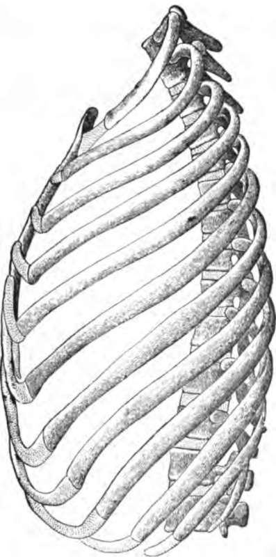
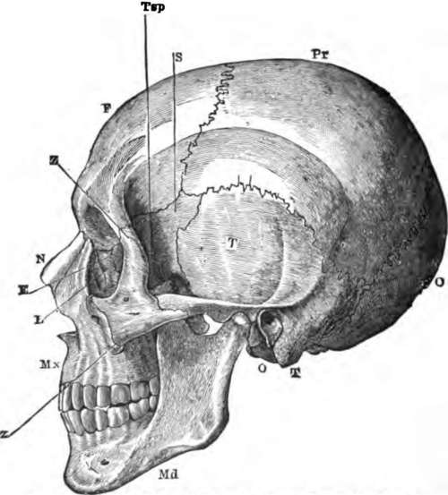

Uses Of The Mode Of Structure Of The Spinal Column
Description
This section is from the book "The Human Body: An Elementary Text-Book Of Anatomy, Physiology, And Hygiene", by H. Newell Martin. Also available from Amazon: The Human Body.
Uses Of The Mode Of Structure Of The Spinal Column
When the backbone is viewed from one side (Fig. 9) it is seen to present four curvatures; one in the neck, convex ventrally, is followed by a curve in the opposite direction in the dorsal region; in the loins the curvature is again convex ventrally, and opposite the sacrum and coccyx the reverse is the case. These curves add greatly to the springiness of the spine, and prevent the transmission of sudden jars along it.* The compressible elastic pads placed between the centra of the vertebræ promote the same end ; the skull, containing the soft brain (which would be readily injured by mechanical violence) and the spinal cord, contained in the backbone itself, are thus protected from jarring in running, jumping, etc.
The compressible pads between the bodies of the vertebra allow of a certain range of movement between each pair, so that the column as a whole may be bent to a considerable extent in any direction. On the other hand, these pads so limit the movement that no sharp bend can occur at any one point, such as might tear or bruise the spinal cord lying in the neural canal.
How is the skull articulated to the backbone? How many curvatures are there in the backbone? What is their direction?
What results from the curvatures of the spinal column? What is the object of the pads between the vertebræ?
* Take a straight bat tolerably flexible and elastic bar, as a lath, or, better still, a thin steel rod. Hold it vertical, with one end resting on the floor, and give a smart blow on the upper end; the jar will be sudden and violent. Now bend the rod and hit it again ; the jar will be much less, as the curved rod yields somewhat to the blow on its top.
The sacral vertebræ grow together firmly to give a solid support to the pelvic arch, which transmits the weight of all the rest of the body to the lower limbs when we stand.
Summary
The back-bone is rigid enough to support all the rest of the body; flexible enough to bend considerably in any desired direction, yet not sharply at any one point; and elastic enough to destroy or greatly diminish any sudden jar or jerk which it may receive. It is one of the most beautiful pieces of mechanism in the body.
The ribs are twelve in number on each side (Fig. 15). They are slender curved bones embracing the sides of the chest, and attached at one end to the dorsal vertebræ. Ventrally each rib ends in a costal cartilage ; the cartilages of the seven upper pairs are directly articulated to the sides of the breast-bone. The eighth, ninth, and tenth cartilages join those of the ribs above them; the eleventh and twelfth are not attached to the rest of the skeleton at their ventral ends, and are known as the free or floating ribs.
How is it that we can bend the backbone? How is the extent of bending at any one point limited? Why?
Why do the sacral vertebræ grow together?
State briefly the mechanical properties of the vertebral column.
How many ribs are there ? What is their shape ? To what are their dorsal ends attached? How does each rib end ventrally? To what are the costal cartilages of the first seven ribs attached? To what the next three costal cartilages? Which are the floating ribs? Why so called?
Fig. 15. The ribs of the left side, with the dorsal and two lumbar rertebrae the rib cartilages, and the sternum.
The skull (Fig. 16) is composed of twenty-eight bones : eight of these, forming the cranium, are so arranged as to surround the brain and protect the ears ; six lie inside the ears; and the remaining fourteen support the face, surround the mouth and nose, and (with the aid of some of the cranial bones) form the eye-sockets.
How many bones in the skull?
Fig. 16. A side view of the skull.
How many in the cranium? What purposes do the cranial bones fulfill? How many lie inside the ears? How many bones in the face? What parts do the face bones support and protect?
The cranium is a box with a thick floor (Fig. 1), continuing forwards the partition which in the trunk separates the neural from the haemal cavity. On its under side (Fig. 20) are many small apertures through which nerves and blood-vessels pass in or out, and one larger one, the foramen magnum, through which the spinal cord passes in to join the brain.
The cranial bones (Fig. 16) are the following : 1. The occipital lone, O, unpaired, and having in it the foramen magnum. It lies at the back of the skull. 2. The frontal lone, F, also unpaired, lies in the forehead. 3. The parietal bones, Pr, two in number, meet one another above the middle of the crown of the head, and form a great part of the roof and sides of the skull. 4. The temporal bones, T, one on each side, opposite the temples; on the exterior of each temporal bone is a large aperture leading into the ear cavity, which is contained in this bone. 5. The sphenoid bone, unpaired, and lying in the middle of the base of the skull, but sending out a wing, 8, which reaches some way up each side, just in front of the temporal. 6. The ethmoid bone, E, forms the partition between the brain and nose chambers, and part of that between the nose and the eye socket.
Continue to: